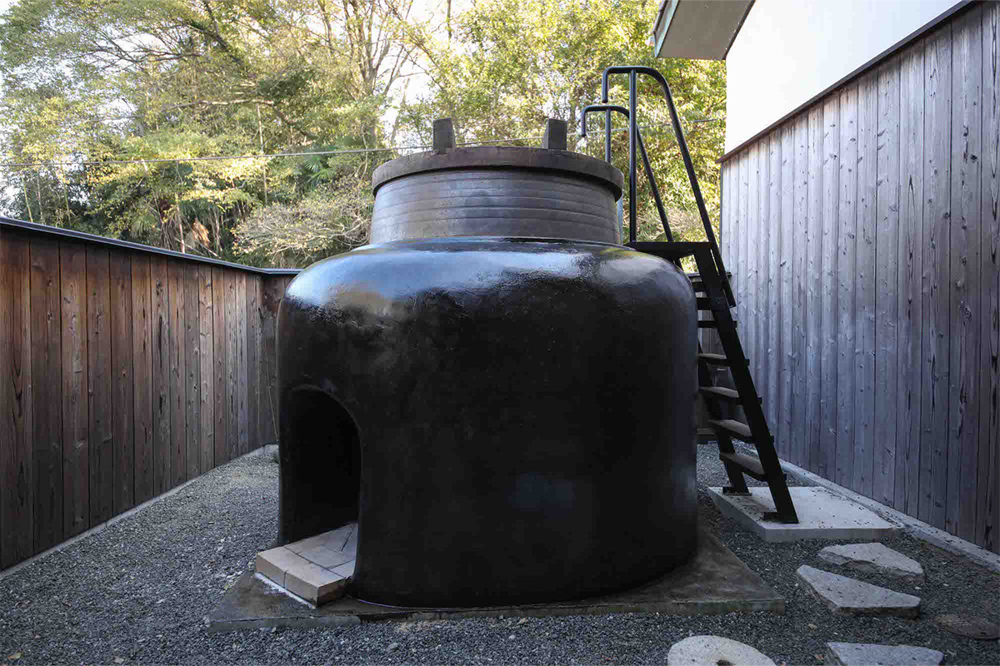
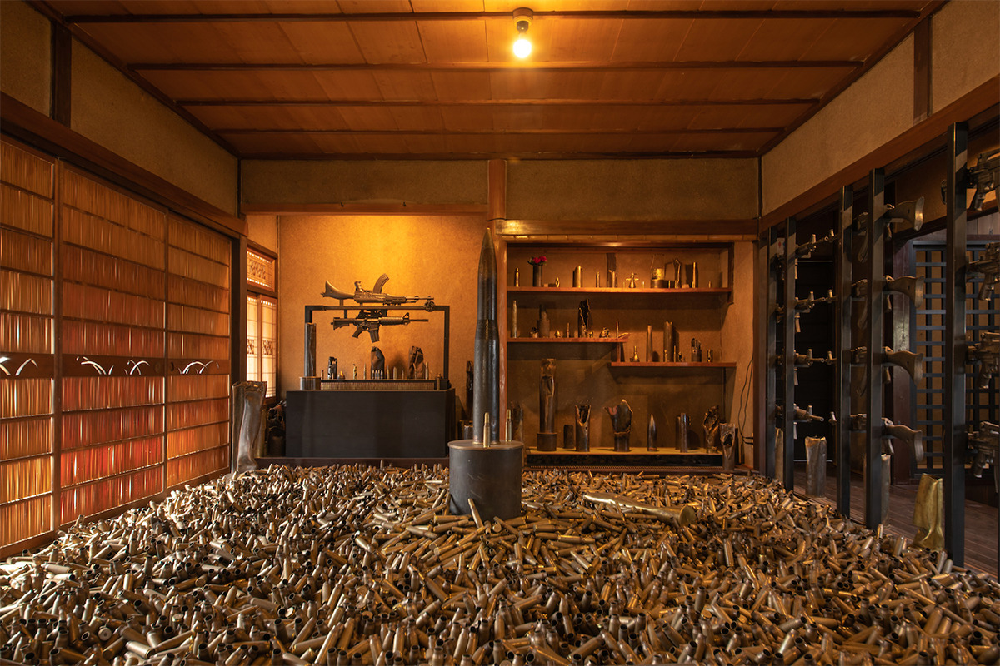
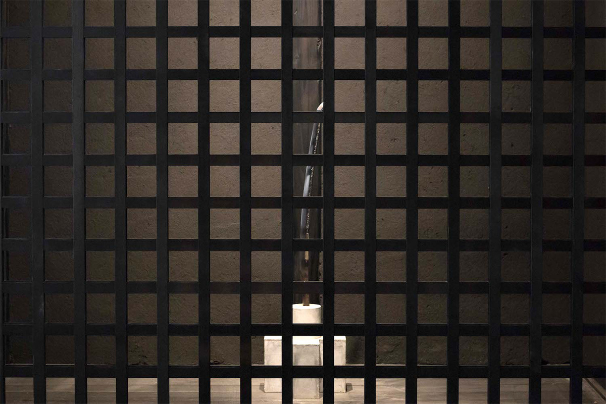
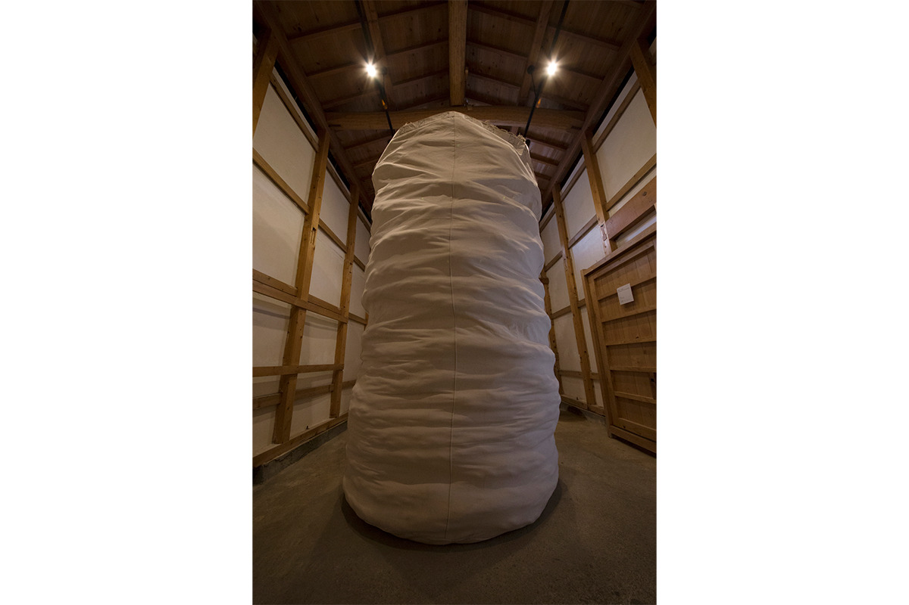
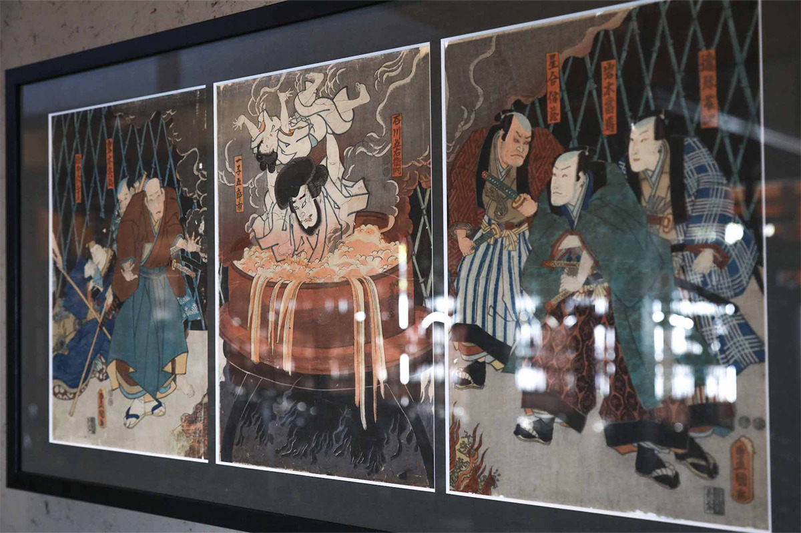
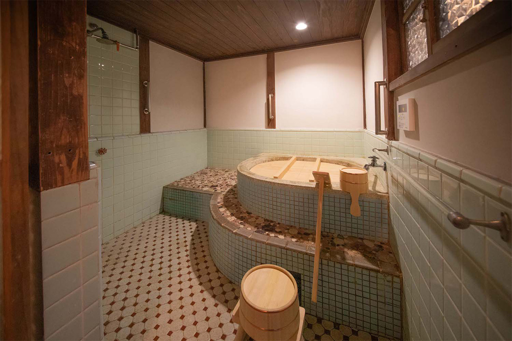
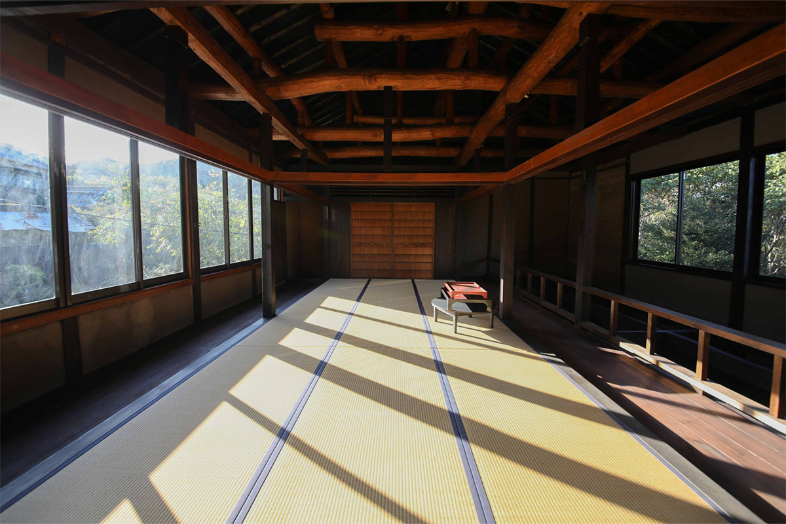
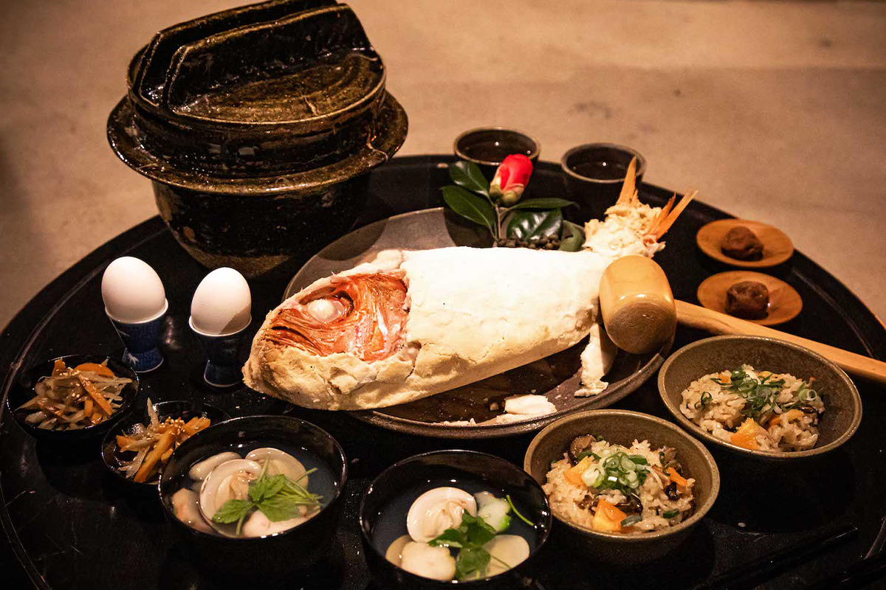

Префектура Хиросима · Момосима · ночлег
«Гоэмон-хаус» на острове Момосима: ночь среди современного искусства

Один дом, одна компания гостей и совсем немного покоя. На острове Момосима старый японский дом превратили в ночлег, где современное искусство соседствует с гигантской ванной, а ужин повторяет последний пир легендарного разбойника.
Дом
«Неуютный постоялый двор» на острове
До острова Момосима в Внутреннем Японском море идёт паром из Ономити, дорога занимает около 45 минут. Здесь, в старом японском доме, открылся ночлег «Гоэмон-хаус». Принимают всего одну компанию, от двух до четырёх человек, и обещают не покой, а прямо противоположное: сам хозяин называет своё заведение «неуютным домом». Всё дело в искусстве, которое вросло в стены.
Искусство
Ночь в музее, который не закрывается
Работы современных художников выставлены здесь постоянно, но по-настоящему их видно только вечером: гостям показывают то, чего не увидит случайный посетитель.

В большой комнате на первом этаже развернулась серия Тю Эноки. Художник родился в 1944 году в городе Дзэндзудзи в Кагаве, с конца шестидесятых работал в Кансае и с тех пор строит искусство из оружия и металлолома. Здесь стоят три тонны гильз, собранных на настоящих полях сражений, пушка «Liberty C2H2», сваренная из железного лома, и литые макеты автоматов Калашникова и американской винтовки AR-15.

Юкинори Янаги известен далеко за пределами Японии: в 1993 году он первым из японцев получил премию Аперто на Венецианской биеннале. Его работу 2018 года «Птица в клетке» сделал меч, найденный в одном из опустевших домов Момосимы. С этим мечом связана местная история: ушедший на войну островитянин спасся с тонущего военного корабля, и при нём не было ничего, кроме этого клинка.

В кладовой стоит работа Нориюки Харагути 2017 года. Художник начинал в конце шестидесятых, а в 1977 году первым из японцев попал на кассельскую «Документу» и поразил Европу огромным железным бассейном с отработанным маслом. Здесь он набил большой мешок двумя тоннами корабельного троса, и тот держится сам, одним лишь своим весом.

Рядом висит гравюра Утагавы Тоёкуни III, мастера укиё-э эпохи Эдо, известного также как Кунисада. На листе запечатлена сцена, давшая дому имя: казнь разбойника в котле.
Ванна
Что такое гоэмон-буро
Гоэмон-буро это ванна, которую топят снаружи: чугунный котёл вмурован в очаг, под ним разводят огонь, а внутрь наливают воду и садятся сами. Название пошло от Гоэмона Исикавы, разбойника эпохи Адзути-Момояма. Он пытался украсть принадлежавшую Хидэёси Тоётоми курильницу «тидори», был пойман и казнён в котле с кипятком. Здешний котёл огромен: шириной 1,6 метра, в него помещаются четверо. Есть и запасная внутренняя ванна, маленькая и всегда горячая.

Ночь
Сон под балками и ужин разбойника

Спальню устроили на втором этаже, под открытыми деревянными балками. Ужин здесь подают как последний пир Гоэмона: рыбу запекают в соли прямо в очаге той самой ванны, к ней идёт рис, приготовленный в котле, и суп.

На завтрак выносят домашний хлеб на закваске из момосимских цитрусов, джемы из местных мандаринов и земляники, сезонные овощи и рыбу из Внутреннего Японского моря. К ночлегу прилагаются каяк, сапборд, велосипеды и гончарное дело.
«Гоэмон-хаус»
- Адрес
- префектура Хиросима, Ономити, Момосиматё, 1731
- Телефон
- +81 848-73-5105 (с 9:00 до 17:00, по вторникам и средам выходной)
- Номера
- один дом, от 2 до 4 гостей
- Цены
- от 66 000 иен за ночь